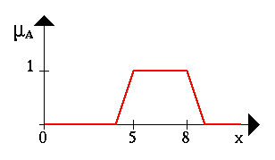
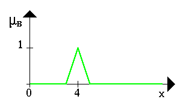
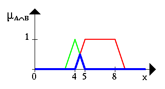
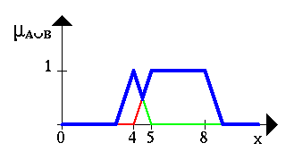
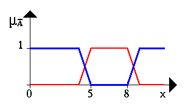

[  ] [
] [  ] [
] [  ]
]
Операции с нечеткими множествами
Сейчас, когда мы уже знаем, что такое нечеткие множества, попытаемся определить
базовые операции (действия) над нечеткими множествами. Аналогично действиям
с обычными множествами нам потребуется определить пересечение,
объединение и отрицание
нечетких множеств. В своей самой первой работе по нечетким множествам Л.
А. Задэ предложил оператор минимума для пересечения
и оператор максимума для объединения двух нечетких множеств.
Легко видеть, что эти операторы совпадают с обычными (четкими) объединением
и пересечением, только рассматриваются степени принадлежности 0 и 1.
Чтобы пояснить это, приведем несколько примеров. Пусть A
нечеткий интервал от 5 до 8 и B нечеткое число около 4, как
показано на рисунке.
 
Следующий пример иллюстрирует нечеткое множество между 5 и
8 И (AND) около 4 (синяя линия).

Нечеткое множество между 5 и 8 ИЛИ (OR)
около 4 показано на следующем рисунке (снова синяя линия).

Следующий рисунок иллюстрирует операцию отрицания. Синяя линия - это
ОТРИЦАНИЕ нечеткого множества A.

[
] [
] [
]